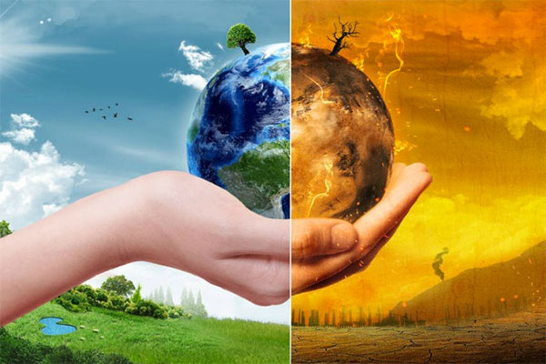

Introducción
Los modelos de desarrollo sostenibles son el resultado de detallados procesos de colaboración que involucran diálogos de grupos de interés internos como exteros. Estos modelos pretenden atender a los más relevantes desafíos de la sociedad en donde puede tener una contribución positiva.
El concepto de desarrollo sostenible refleja una creciente conciencia a cerca de la contradicción que se puede dar entre el desarrollo y la conservacion de los recursos naturales del planeta; en primer lugar se entiende como creciemiento económico y mejora del nivel material de nuestra vida, las condiciones ecológicas y sociales para que ese desarrollo pueda perdurar en el tiempo. Esta conciencia de los costos humanos, naturales y medioambientales del desarrollo y el progreso han venido a modificar la actitud de despreocupaión o justificación que al respecto imperó durante mucho tiempo.

La idea de un crecimiento económico sin limites y en el pos del cual todo podía sacrificarse vino a ser reemplazada por una conciena de esos limites y de la importancia de crear condiciones de largo plazo que haga posible un bienestar para las actuales generaciones que no se haga el precio de una amenaza o deterioro de las condiciones de vida futuras de la humanidad. El 25 de septiembre, los lideres del mundo se reunirán en la sede de las Naciones Unidas, en la ciudad de Nueva York, con el fin de aprobar una agenda que asegure el desarrollo sostenible en el mundo.
En visperas de que las personas, los pueblos, las ciudades, las naciones, es decir, cada habitante del mundo se concientice de la real necesidad que la naturaleza demanda de cuidado, los biocombustibles se presentan como una de tantas soluciones para mitigar el impacto hambiental que desde hace decadas el uso imprudente y desmedido de los combustibles focieles han dejado huella en el ambiente como daño irreparable al aire, a la tierra y al ozono.Con el objeto de contribuir a la tan necesariamente que se hace la implementación de modelos sostenibles de los cuales algunos o muchos quisieran que fuera en la actualidad una realidad palpable, se crea esta pagina con la finalidad de dar a conocer en que consisten los biocombistibles y que tan beneficiosos serian para la tan anhelada calidad de vida que todos nos merecemos, que todos necesitamos y que las futuras generaciones quisieran tener.
Los autores.